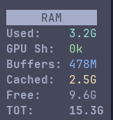
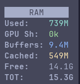
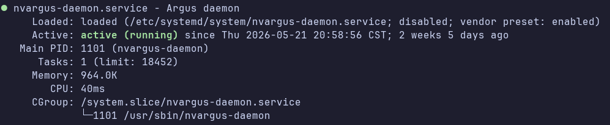

Optimizations¶
RAM optimization¶
Disable Desktop GUI¶
Free memory if Ubuntu Desktop GUI is not needed:

Clear Cache if a fresh prod run is needed:
This will open jtop, goto4MEM option and clear cache. Kills ollama and other background daemons. ~800MB remains, rest is cleared.

To persist this across reboots:
Disable Camera Processes¶
If camera feed is not needed, disable it to free RAM.

Increase Swap Size¶
Large model might give OOM errors and containers might need more swp size.
Disable RAM compression and increase swap size for this reason.
Jetson might come with 8GB.swap, if so, this needs to be replaced with 16GB.swap and that too in the partition where /idata is mounted (which has more space) than partition with / mount point.
jetson@yahboom:/$ sudo swapoff /var/8GB.swap
jetson@yahboom:/$ sudo rm -f /var/8GB.swap
jetson@yahboom:/$ sudo systemctl stop nvzramconfig
jetson@yahboom:/$ sudo systemctl disable nvzramconfig
jetson@yahboom:/$ sudo swapoff /dev/zram*
Removed /etc/systemd/system/multi-user.target.wants/nvzramconfig.service.
jetson@yahboom:/$ sudo fallocate -l 16G /idata/16GB.swap
jetson@yahboom:/$ sudo chmod 600 /idata/16GB.swap
jetson@yahboom:/$ sudo mkswap /idata/16GB.swap
Setting up swapspace version 1, size = 16 GiB (17179865088 bytes)
no label, UUID=1279a20a-74ca-492f-a912-eeda0eee8f1e
jetson@yahboom:/$ sudo swapon /idata/16GB.swap
Make this change persist by adding the following line to /etc/fstab and comment out lines referring to /var/8GB.swap:
Check if we were succesfull:
Don't hesitate to double the swap size in future if OOM for LLMs is an issue. But if a software needs swap all the time, it will be slower since swap is on SSD.
Power optimization¶
Enable MAX power mode:
Enable Jetson clocks: CPU and GPU cores run at maximum frequency: